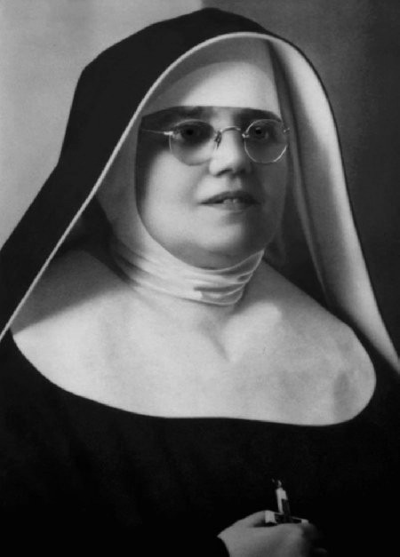
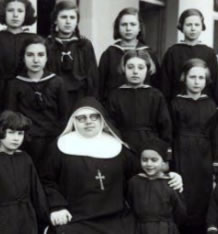
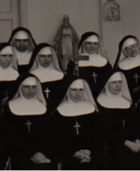

NUESTRA HISTORIA
HISTORIA DE LA PROVINCIA “SAGRADO CORAZÓN DE JESÚS” ARGENTINA DESDE SU DIMENSIÓN PASTORAL. 1936 – 2010 (Por Hna. Nilda Ramírez)
“Hijas de la Misericordia de la T.O.R. de San Francisco"
- 1ª Parte: INTRODUCCIÓN
- 2ª Parte: PRIMER PERÍODO: 1936 A 1939
- 3ª Parte: SEGUNDO PERÍODO: 1940 A 1952
- 4ª Parte: TERCER PERÍODO: 1953 A 2010
INTRODUCCIÓN
Palabras preliminares
En el presente año 2010, transitando la Congregación por sus 90 años de existencia y 74 años de presencia en la Argentina, me dispongo a delinear someramente cómo se ha encarnado en Argentina el carisma y la espiritualidad de las Hijas de la Misericordia enfocado desde lo histórico-pastoral. Mi trabajo está limitado al material al que puedo acceder al momento de realizarlo. En los archivos de la casa provincial de la Argentina, y en las filiales de la misma, no se encuentran los documentos de los primeros tiempos de las experiencias de las hermanas llegadas de Croacia y de la misma presencia de la Madre Fundadora María de Jesús Crucificado Petkovic; desde el año 1936 a 1952, por haber sido trasladados todos ellos a la casa general de Roma, quedando unos pocos materiales, hallados en forma aislada y muchos en idioma croato.
Me limito servirme de copias mecanografiadas de exhortaciones de la fundadora, trabajos realizados por las hermanas, informes anuales posteriores al período citado, publicaciones en español de libros sobre la historia de la congregación y escritos de María Petkovic, algunos libros de visitas, algunos documentos de autoridades y personas civiles, la tradición oral que ha quedado en la provincia y el testimonio de las primeras hermanas latinoamericanas.
La identidad carismática de las Hijas de la Misericordia
En forma explícita, directa y clara se pueden leer en las Constituciones de la Congregación, el carisma que anima a las Hijas de la Misericordia, la espiritualidad que la alimenta y las obras que en sintonía se desprenden de ella, he aquí los textos: “Vivimos nuestro carisma de Hijas de la Misericordia testimoniando la Misericordia del Padre Celestial y de su Divino Hijo Jesucristo.
Estamos llamadas a donarnos totalmente a Dios y a los hermanos observando el santo Evangelio y los Consejos Evangélicos, viviendo radicalmente el amor y la misericordia al servicio del Reino”. (Constituciones Nº 2. Ariccia agosto 2009). “Unidas en fraternidad, seguimos a Cristo Crucificado inspiradas en el ejemplo de la Beata Madre Fundadora y de San Francisco de Asís”. (Constituciones Nº 3. Ariccia agosto 2009). “El espíritu de la Congregación es: el amor a Dios y al prójimo, en primer lugar hacia nuestras hermanas; la confianza en Dios Padre; el cumplimiento de la voluntad de Dios, el empeño por alcanzar la humildad, la abnegación, el sacrificio, la penitencia, la expresión concreta de la minoridad franciscana y de la conversión”. (Constituciones Nº 4. Ariccia agosto 2009). “Nuestra espiritualidad, que brota del carisma, se centra en Jesús Hijo predilecto del Padre, Encarnado, Crucificado, Resucitado y Eucarístico, y desea promover su realeza y el amor a su divino Corazón”. (Constituciones Nº 5. Ariccia agosto 2009). “Confiadas en la Providencia Divina, fieles al Espíritu, al carisma, a las sanas tradiciones y al patrimonio espiritual de la Congregación, cooperamos con la Misericordia del Padre y nos dedicamos al apostolado: educativo-formativo, parroquial, de la salud y de los ancianos, a las misiones, a la promoción humana y a otros servicios en la comunidad; atentas a los signos de los tiempos y a las necesidades de la Iglesia”. (Constituciones Nº 6. Ariccia agosto 2009)
En estas declaraciones se encierran en forma sintética y actualizada, toda la riqueza vivida y transmitida por la Fundadora a sus herederas, y constituyen la fuerza vital, que plasmada en vidas concretas, es capaz de desencadenar el proceso de atracción, escucha y adhesión al carisma y la espiritualidad, ya sea, en la aceptación y acogida del mismo como receptor beneficiario, o como seres llamados a la plena asimilación y vivencia del don para ser artífices y continuadores del suceso carismático a través de la entrega, la consagración y expansión del mismo, debido a su fuerte y permanente actualidad en cualquier realidad humana necesitada de misericordia, como de hecho ocurrió en la Argentina y en América Latina.
Algunas líneas de fuerza desencadenadas desde el corazón de María Petkovic
a.- Ser hija del Dios de la misericordia: Su fuerte experiencia de la paternidad de Dios desde pequeña, la llevó a una ilimitada confianza en Dios Padre, amor y misericordia, al punto de hacerla sentir plenamente hija y plenamente amada abriéndose a una entera correspondencia a la Voluntad de ese Amor a lo largo de su vida.  Coherente con esta realidad en la que se sintió inmersa, al fundar la Congregación, por el querer de Dios, le puso por nombre “Hijas de la Misericordia” y no sierva, ni esclava, transmitiendo a sus hijas idéntica experiencia de filiación con Dios y hermana de todos en Jesucristo al estilo de Francisco de Asís de cuya espiritualidad bebió con abundancia. En este contexto les decía en sus exhortaciones: “Hijas de la Misericordia, significa que son hijas del Dios de la Misericordia, hijas del Corazón de Cristo...El Creador Dios de Misericordia, por su Hijo Jesucristo, tiene sus hijas espirituales, las hijas de su misericordia, en cuyos corazones derrama su amor y su espíritu de misericordia para continuar su obra de misericordia con la humanidad...por eso, como hijas, seamos verdaderas imágenes de la misericordia de Dios, de Jesucristo; que todos los atribulados y afligidos puedan encontrar en nosotras sus hermanas e hijas de la misericordia, un consuelo en su amargura, una hermana de todos, que a todos ama y de todos se ocupa para que sean felices y se salven”. (Capítulo, Caseros 13 de diciembre de 1942). En qué profundo compromiso amoroso y en qué abismo insondable del misterio de Dios se sumergió María, involucrando consigo a sus hijas a quienes engendró espiritualmente, las amó y quiso que participaran de su misma gracia carismática y fueran envueltas en el mismo extraordinario amor misericordioso del Padre en Cristo Verbo Encarnado y Amor Crucificado para testimoniarlo a sus hermanos con su vida y sus obras amándolos. Es por ello que “una hermana misericordiosa levanta, sana, consuela, enseña y hace felices a los demás...ha sido elegida para que sea hermana misericordiosa y ha de sentirse feliz de poder ayudar a otros. Si Dios es Misericordia, su hija que continúa su obra, se llama por esto hija de la misericordia...En Cristo debe mirar y amar a todos. Si hace excepciones, lo hará para con los necesitados, débiles, pequeños y pecadores... (Capítulo-Casa Madre, 10 de mayo de 1931).
b.- Los iconos de su Amor: Su ardiente y apasionado amor a Cristo Encarnado y Crucificado, expresión máxima para ella del Amor Misericordioso del Padre, se hizo vida en su persona de tal manera que la llevó a vivir y a obrar en consecuencia con total entrega a este amor en la humanidad pobre y sufriente, encarnada en la realidad y crucificada por amor a su Rey. El misterio del Verbo Encarnado, Palabra del Padre que por misericordia vino a nosotros para darnos vida, le era muy querido y refiriéndose a eso dice:”esta meditación me es grata y en ella encuentro gran placer al contemplar la misericordia y el amor de Dios por las criaturas, es decir la Encarnación...Dios se apiadó de la humanidad y envió a su Divino Hijo para que la recogiera y la sanara, tuvo misericordia de los pobres y necesitados y envió a su Verbo para que los consolara y confortara”(Capítulo-Roma 25/3/57). Al dirigirse al Hijo de Dios hecho carne se expresaba con fervor diciendo: “Oh dulcísimo Hijo, te amo en el Padre, oh Amor Encarnado, oh Don de Misericordia, o dulcísimo Hijo del seno del Padre”, Jesús, Palabra Eterna del Padre, creo en Ti...Jesús, reflejo de la hermosura del Padre, te alabo en el Padre...Jesús, Rey de mi alma y de mi corazón, reina en mí...Jesús, Maestro mío, enséñame...”(Mensajes de fe pág. 18 y 24). Decía que “no podríamos hablar de Dios si antes no escuchamos al Amado. ¿Cómo podrá brotar de nosotras un manantial de amor del cual puedan beber otros si en nosotras no hay Vida, si no estamos unidas a la Fuente de Vida Eterna que es Cristo? Nuestro ser, nuestro espíritu y todo lo que somos, debe...recibir la Palabra de Dios...el tesoro más preciado y el bálsamo para nuestra alma...”. (Roma M. Petkovic: 5/11/56). El Verbo Encarnado y el Amor Crucificado fueron en ella una fuerte expresión del amor misericordioso del Padre Celestial. Pronunciaba con frecuencia una frase característica: “el Amor Crucificado”, en cuya fuente se abrevaba y del cual anhelaba dar de beber a otros exclamando con San Pablo “el amor de Cristo me devora...me urge...(Exhortación Roma 5/11/56). Para ella “la grandeza de la Cruz resplandece como signo en todas partes, ...la Cruz no es algo triste, es la profundidad del misterio que cuanto más la contemplamos, tanto más profundamente se nos abre el libro de la grandeza y de la piedad de Dios. La ciencia más grande se aprende de la Cruz, la Cruz no puede abatir al alma, sino que la levanta y la fortalece, en la Cruz está la fuerza y la seguridad” (Exhortación-Blato 14 de mayo de 1936). A sus hermanas con frecuencia les pedía que “meditasen en esto: `mi Amor está Crucificado`, miren a su Amor Crucificado, y que El les explique su misterio; si contemplan la Cruz, aceptarán también su mística...`devuelvan Amor por Amor`, abracen la Cruz con todo el corazón y a Él, nuestro Amor Crucificado” (Exhortación-Blato 14 de mayo de 1936).
c.- Por amor a Dios, amor a los hermanos: Para María Petkovic fueron inseparables el amor a Dios del amor a los hermanos, no concebía la Misericordia de Dios sin una respuesta y una correspondencia a ese amor plasmada en obras de caridad para con los demás. La intensidad del amor misericordioso de Dios experimentado en su alma, la devoraba, y la impulsaba a la entrega completa a su Dios, y por amor a Él a su prójimo, saliéndose de sí misma, para ir hacia la humanidad haciendo conocer ese amor, aliviando todo dolor humano, socorriendo y consolando al que sufre, cualquiera fuese su condición social y su creencia, porque “quien posee el amor, posee a Dios y quien posee a Dios, incluye a todo el mundo y se sacrifica por él, sin distinción...El amor es activo, se demuestra no solo con palabras sino con obras...”. (Capítulo-Blato 23 de febrero de 1936). “...no hay dicha más grande en este mundo que servir a Cristo amado, en el pobre hermano sufriente, no hay consuelo más grande, que aliviar los corazones afligidos, no hay amor más santo que amar a todos los abandonados mirando en ellos a Cristo Crucificado...” (Libro de visita, San José, Hogar de ciegos. S. Lugares. Buenos Aires, 16 de julio de 1943)
 Considerando sus escritos, sus expresiones verbales, el testimonio de su vida y de sus obras, no queda duda de la relación intrínseca y de la síntesis que realizó en su persona acerca del Amor, estableciendo un vínculo indisoluble entre el amor a Dios y el amor al prójimo, haciendo de él, dos aspectos de una misma realidad. No podía concebir que quien amara a Dios no amara también a los demás especialmente a los más débiles, a los que sufren, a los niños, a los ancianos y a todos ya que ”no deberíamos nunca mirar si aquel a quien hacemos el bien es bueno o malo, joven o anciano, creyente o no; saber que está necesitado es suficiente para ir en su ayuda”(Mensajes de Fe, pág. 39). Para ella y sus hermanas, toda la preocupación y el esfuerzo, “debían ser por amor de Dios para los pobres, en quienes miramos a Cristo” por eso decía que, “trabajemos para la gloria de Dios y por su amor, para los pobres y abandonados” (Diario espiritual 26 de marzo), “por Él, realizamos obras de amor, aquel fuego que Él ha traído a nuestro corazón encenderá a otros corazones, así unidas con El en el amor, podremos trabajar eficazmente en la extensión de su amor divino en la humanidad, iluminarla y mostrarle el camino de la salvación. (Capítulo Casa Madre, abril de 1931). Para ella “una hermana debe mirar a Jesús en cada enfermo, sea él, anciano o joven, instruido o ignorante, pobre o rico”. (Capítulo-Casa Madre 1932). “El mejor servicio a Dios daremos trabajando y sacrificándonos por los pobres” (Orientaciones y Consejos, Casa Madre 7 de julio de 1938), “para esto debemos estar llenas del amor de Dios que despierte en nosotras el amor hacia el prójimo, hacia las personas, los niños abandonados y hacia todos”. (Exhortación, Caseros 28 de noviembre de 1941). Ella deseaba “que cada hermana tenga y aumente en su corazón el amor a Cristo, nuestro Señor y Maestro para que también pueda salvar y hacer felices a los demás”. (Capítulo, Caseros 25 de marzo de 1942).
Una caridad expansiva, una misericordia sin fronteras
Tan fuerte era su amor a Jesús y al Padre Misericordioso que anhelaba solo hacer su Voluntad y llevar a todas las personas al encuentro con Cristo para que sean felices y para que Cristo sea conocido y amado por todos. Para esto no tenía fronteras ni para ella ni para sus hijas, deseaba ardientemente “ir por todo el mundo y realizar obras de amor y misericordia y salvar a las almas para que sean felices en Dios, porque en esto consiste el verdadero amor de Cristo, en hacer felices y bienaventurados a todos en Dios. ¡Oh santo amor! Qué grande y poderoso eres. Has brotado del corazón de Cristo y te derramas en las almas” (Capítulo Casa Madre, abril de 1931). Según la Madre Fundadora, el amor que se experimenta y proviene de Cristo, es dinámico, pone en movimiento a la persona hacia los demás y a la vez la hace feliz, ¡con cuánto entusiasmo decía a sus hijas!: “este amor activo las hará felices también a ustedes...porque están unidas a El!, ¡por eso, unámonos a Cristo, para que este amor se derrame a través de nuestros corazones a las almas que sufren y a la humanidad entera” (Capítulo Casa Madre, abril de 1931). “deben ir por el mundo, a trabajar en hospitales, abrir colegios, y realizar obras de misericordia, sin temor, sin desalentarse por nada, basta tener amor, porque el amor todo puede, todo salva, todo lo alcanza”.(10-9-54)
Se evidenciaba con claridad que el deseo de expandir la gloria del Padre y su amor misericordioso por todas partes, la consumía por completo haciéndola actuar en consecuencia y exclamar en muchas oportunidades que “desearía recorrer el mundo entero, y volar libre desde un confín al otro llevando a Cristo y anunciando su amor...” (Mensajes de fe pág. 30). Al mismo tiempo se disponía con gran apertura de espíritu a ser conducida por la Voluntad de Dios hacia lo que Él quería de ella, entregada completamente al querer de Dios cuya Misericordia hecha imagen en el Amor Crucificado la había marcado profundamente y no podía dejar de darlo a conocer a los demás, especialmente a los pobres y a los que sufren en cualquier parte del mundo, como se pudo apreciar de hecho en sus obras y en tantas expresiones suyas como ésta: “Heme aquí Señor, me consagro a Ti totalmente, pronta para hacer tu voluntad y sacrificarme por Ti y por los pobres (aunque no sepa qué sucederá de mí); que Tú dispongas todo como Señor y entonces yo te obedeceré, vendré y con todo mi corazón me sacrificaré por Ti, por tus hijos y como la sierva haré tu voluntad” (P. Jure Zacevic, OCD, Zagreb. 1996 “La figura y la obra de la sierva de Dios María Petkovic desde el punto de vista ecuménico”). Ella, dejándose guiar por un acertado discernimiento orante, atendiendo a las inclinaciones de su espíritu, los acontecimientos de su entorno y los consejos de su director espiritual Monseñor José Marcelic, no tuvo dudas de que “La Voluntad de Nuestro Señor Jesucristo al fundar esta Congregación fue extender y dilatar el conocimiento del Amor Divino a través de las obras de misericordia espirituales y corporales...” (Capítulo, Caseros 25 de marzo de 1942), y que esta obra estaba abierta al mundo entero a través de las hijas que Dios le había dado, ya que ella se sentía impotente y pequeña para cumplir tamaño deseo que la consumía, por eso en muchas ocasiones decía a sus hermanas que “sólo aquellas que aman a Cristo y viven unidas a Él, serán capaces de llevar amor.. y consuelo a la humanidad sufriente, cumpliendo la misión de Cristo en la tierra...”.(Exhortación. Casa Madre15-1-28), y que “ayudar a alguien, y consolarlo, es nuestro deber, por eso, cultiven en su corazón sentimientos de Misericordia ya que son Hijas de la Misericordia, ...sigan a Dios en su Misericordia en todas partes y en todo lugar”, (Exhortación. Casa Madre 8-1-36) y les pedía con ardor y entusiasmo que “vayan...por el mundo, en nombre de Dios, a sanar a los enfermos, a consolar a los tristes, a salvar a los huérfanos, a predicar el Evangelio, y a anunciar a todos, que se acerca el Reino de Dios”(Exhortación. Casa Madre 7-7-38), “por todas partes...vayan haciendo obras de misericordia...llevando la paz y el bien a la humanidad que sufre terriblemente...Por donde quiera que vayan, respeten y amen a todos como a sus hermanos en Cristo, ya sean ricos o pobres, campesinos u obreros y anuncien a todos el evangelio, amen en Dios a sus hermanos obreros, respeten sus manos trabajadoras y sufridas.” (Orientaciones y Consejos, Casa Madre 7 de julio de 1938). “Hemos venido al servicio de Dios, para trabajar por su gloria, ...en las misiones, en la salvación de las almas...para que vayamos extendiendo y llevando por el mundo, la fe y el conocimiento de Dios a todos... para que venga el reino de Dios a todas las naciones”. (Exhortación, Caseros 28 de noviembre de 1941). También, en este sentido de experimentar una misericordia sin fronteras, oraba por sus hijas con tal confianza como lo hacía Jesús con su Padre, con la sencillez propia de quien se sabe escuchada, con palabras como: “Jesús, da a mis hermanas la gracia de poder llevar por el mundo tu gloria y tu amor; a fin de que venga tu reino a todos los pueblos, a todas las almas, y sea glorificado nuestro Padre Celestial. Padre te amo sobre cada cosa y, en Ti, amo a la humanidad toda”. (Mensajes de fe pág. 23) “Quiero que mis hermanas estén llenas de tu amor para extenderlo por el mundo, enseñando a los ignorantes, fortaleciendo a los débiles, levantando a los caídos y enfervorizando en tu amor todopoderoso a los indiferentes.” (Mensajes de fe pág. 19)
La Madre Fundadora desde joven tuvo el deseo de hacer conocer el mensaje del amor de Dios como ella misma asegura en su Testamento: “Ese anhelo me consumía, me impulsaba hacia países lejanos, a predicar y a difundir su amor...”(Testamento Espiritual Autógrafo, p. 2). Al fundar la Congregación, “...pronto se dio cuenta de que los necesitados y los niños desamparados los hay en todas partes a lo largo y ancho de su patria, en otros países, al otro lado del océano..., por eso, no hay duda de que desde la primera redacción de las constituciones de 1923, donde escribía sobre el fin específico de su Congregación diciendo que: `las hermanas, por el amor a Cristo, se sacrificarán por el prójimo, se ofrecerán a Dios como victimas para la salvación de las almas, haciendo las obras de misericordia espirituales y corporales`, pensaba en una actividad y una misión más amplia que la que en aquellos días podía llevar a cabo en el pueblo natal. En las constituciones redactadas en 1928 se afirma que: `conforme a su finalidad, y teniendo en cuenta las circunstancias y la disponibilidad de las fuerzas y los medios, la Congregación cooperará con la Iglesia a favor de las misiones extranjeras`” (Matanic, Atanasio ofm, Testimonio de Amor en español pág. 103)
El llamado desde la Argentina
Leonardo Ruskovic
“A mediados de enero de 1936, María recibió una inesperada carta de la República Argentina. Le había escrito el misionero franciscano croata padre Leonardo Ruskovic y le pedía veinte religiosas para el cuidado de los enfermos. Una parte de ellas atenderían el sanatorio privado “Rivadavia” en Florida (provincia de Buenos Aires)...María aceptó con mucha gratitud la invitación, ya que representaba lo que ella deseaba y veía en esto un gesto providencial, tanto más que no conocía al padre Ruskovic. A la luz de sus ideales misioneros, bien se comprende el agradecimiento a Dios de parte de María, cuando le formularon el pedido, convertido más tarde en aceptación, y envío de sus religiosas a América del Sur. En la crónica manuscrita de la Congregación se lee: `la Madre General elevó fervientes gracias al Señor por la invitación que provenía de la República Argentina, por lo mucho que ella y sus religiosas lo habían deseado. María lo había puesto todo en las santísimas manos de Dios para que El las llamara para cuando llegase la hora...`”(Matanic, Atanasio ofm, Testimonio de Amor en español pág. 104 al 107)
La visión universal de la Madre Fundadora es propia de los santos, le urge llevar el amor de Dios a todas partes, es lo único que le importa, y siempre lo va a hacer en consonancia y en espíritu de comunión con los pastores de la Iglesia, en armonía con los laicos y respeto por las leyes civiles. Así en cada paso que dio, estuvieron de por medio las autoridades civiles o religiosas o ambas a la vez, buscando solo el bien de las personas a quienes deseaba servir. Dejó, que la voluntad de Dios se expresara para ella en todo momento a través de acontecimientos o de mediaciones humanas, no tomando la iniciativa de ninguna obra por sí misma, sino, esperando la manifestación clara, la necesidad constatada, el pedido expreso. Así la vemos en Argentina y en América Latina, responder a las solicitudes que se le hacía para enviar a sus religiosas a hacerse cargo de alguna obra apostólica, o viendo las grandes necesidades de los barrios pobres acudir a atenderlos con visitas a las familias, ayudas materiales, promoción de la mujer a través de cursos, la evangelización y la catequesis; solo en algunos pocos casos se dio la apertura de algún colegio-hogar por decisión propia, siempre respondiendo a carencias concretas que veía en la sociedad.
“La respuesta de María al padre Ruskovic fue afirmativa...El mismo día en que recibió la solicitud, reunió a las hermanas...preguntó...: `¿Quién está pronta para ir al frente como enfermera?`...Respondieron al instante catorce hermanas, declarándose dispuestas...De entre ellas escogió cinco y de otras casas dos hermanas, preparándolas espiritualmente para que estuvieran dispuestas a todo sacrificio...les recomendó que se pusieran a estudiar el idioma castellano. Destinó veinte religiosas para la Argentina, aunque en el primer viaje partirían solo siete. Ellas tomarían a su cargo el sanatorio mencionado más arriba. Las otras las seguirían a la mayor brevedad...y así, entre el 15 de enero de 1936 y el 30 de setiembre de 1938 viajaron a la Argentina veintitrés religiosas, divididas en cuatro grupos. María las preparaba y desde Blato las acompañaba al puerto de Split, donde se embarcaban. A cada una le entregaba el crucifijo para que fuera su modelo, consuelo y guía...les decía: `Almas queridas, amadas hijas, en el día de sus votos religiosos ustedes se han consagrado a Cristo para cooperar con El en la salvación de las almas, por las cuales El se ofreció a la gloria del Padre, dejó a su santísima Madre y se entregó... por nuestra salvación para mostrarnos el verdadero camino hacia la verdad y la vida.
Las ha elegido para que vayan a enseñar y a consolar a los demás. Vayan con El, felices y animadas en su amor. Feliz la esposa cuando va con su esposo a lo largo de los caminos. Nadie ni nada la molesta. Ustedes pueden ser mucho más felices, porque con ustedes se va el Esposo divino, rey del cielo y de la tierra, rey del amor y del poder. Depositen por completo su confianza en El, y permanezcan hasta la eternidad firmemente abrazadas a El. Hijas mías, les pido y les conjuro una sola cosa como su madre que soy: que permanezcan fieles al divino Esposo hasta la muerte. El las espera con el Padre en la eternidad donde descansarán y gozarán en su eterno amor. Vayan, queridas hijas,... alegres como los ángeles, vuelen para auxiliar a la humanidad sufriente. Millones de almas las esperan y en su dolor las llaman. Jesús va con ustedes, para que por medio de ustedes sean consoladas. Muestren al mundo el camino de nuestra verdadera patria celestial, donde todos los dolores serán aplacados. Mi espíritu unido a Jesús está con ustedes. A El y a la protección de santísima Virgen y san José las confío`. La salida de Blato del primer grupo para la América del Sur fue el 11 de marzo de 1936...y al día siguiente 12, las siete religiosas partían de Split para Buenos Aires. María estuvo con sus hermanas hasta el último momento, animándolas. Con el último abrazo repetía a cada una de sus religiosas: “Hija, permanece fiel a Jesús” (Matanic, Atanasio ofm, Testimonio de Amor en español pág. 107 al 110).
La apertura a lo nuevo y la respuesta a las necesidades
La llegada y posterior desenvolvimiento de la misión en suelo argentino de las hermanas croatas de las Hijas de la Misericordia, solo se podría calificar de audaz. Venían a un mundo desconocido, diferente, una cultura que tenía poco que ver con la eslava, un idioma y costumbres específicamente latinoamericanas producto de la influencia europea y precolombina, aún la geografía, el suelo, las aguas eran de otro color y textura, la vegetación, la fauna y la alimentación eran para ellas extraña. Pero vinieron con la esperanza en el corazón y con el arrojo de las mujeres fuertes de su raza, y fueron enriqueciendo sus lugares de trabajo con el aporte de sus dones personales y de su cultura, dejándose a la vez influenciar poco a poco con la frescura propia y las características singulares del pueblo argentino, con cuya idiosincrasia y misión pastoral empezaron a amalgamarse, a identificarse y a encariñarse amándola. Echaron raíces y formaron una nueva cultura de las Hijas de la Misericordia en suelo gaucho sin variar el espíritu que las animó desde su tierra natal. Llegaron a adoptar como propia esta patria y eligieron quedarse para siempre en ella, entregando sus vidas hasta el final. Se durmieron en el Señor, dejándose abrazar por los surcos repletos de siembra de los campos de la evangelización, y aguardan ahora en el seno de la cálida madre tierra argentina la resurrección de los justos, la cosecha madura de la mies, la corona sempiterna de la gloria. Mirando a la distancia tal hecho, tamaña aventura, vienen a la mente muchas preguntas que hacen pensar: ¿qué las impulsó a lanzarse a una tierra tan lejana con cultura tan diversa? ¿el sueño aventurero de sus jóvenes años? ¿el contagio del ardor misionero de su Madre Fundadora? ¿la obediencia? ¿la fuerza arrolladora de la experiencia del Dios misericordioso que invadía al grupo inicial en torno a su Fundadora? ¿la desbordante necesidad de extender el Reino de Dios, la nueva congregación? ¿el ardiente deseo de atender y aliviar todo sufrimiento humano, entregar felicidad y dar a conocer a Jesucristo? ¿qué había en sus almas, en sus corazones, en sus miradas, en sus voluntades? Tuvieron que dejar todo, lo afectivo, la familia, el pueblo, el idioma, todo lo conocido, vivido y amado hasta ahora, encarnarse para siempre, caer en esta tierra y morir dando origen a una nueva generación de religiosas que sintiéndose atraídas por esta espiritualidad y carisma tomaron la posta y asumieron la continuidad de la obra.
Fue una locura, podríamos decir, lo decimos. Pero fue cierto, ellas llegaron, con la sonrisa en los labios, con algún temor quizás, y comenzaron a trabajar sin perdida de tiempo, al día siguiente, como se puede apreciar en el diario de la primera filial del Sanatorio Rivadavia de Buenos Aires, donde quedó constancia escrita del comienzo de sus actividades el 30 de marzo de 1936, habiendo arribado el día anterior 29 de marzo, y así sucesivamente, día tras día, no hubo descanso, y pasaron las semanas, los meses y los años entregando vida, abriendo caminos y esperanzas, allí donde hacía falta.
Un nuevo y extenso panorama se abría ante sus ojos, ¡cuántas necesidades! ¡cuántos pobres! Y ¡cuántos sin acceder al conocimiento y encuentro con Jesucristo! “...iban a las zonas aledañas...de humilde condición...y dedicaban su tiempo libre a la actividad apostólica enseñando el catecismo...entregando ayuda material...” (Matanic, Atanasio ofm, Testimonio de Amor en español pág. 110).
Frente a la nueva realidad que se les presentaba, ellas que habían encarnado en sí, como dignas hijas de María Petkovic, el amor misericordioso de Dios, unido indefectiblemente al amor del prójimo, se mostraron con una actitud abierta a las necesidades y libres de espíritu para ir allí donde más urgía, respondiendo al clamor de sus hermanos ancianos, enfermos, niños y pobres de todo tipo. No se aburguesaron ni se acomodaron en ninguna casa o comunidad, sino que con amplitud de mente y desprendido el corazón, abandonaban una obra que no estaba conforme al espíritu pobre y misericordioso que les había inculcado su Madre y tomaban otra donde había más necesidad de atender, más personas carenciadas, como se verá en el desarrollo y extensión de la misión. Con gran entusiasmo y espíritu de abnegación se entregaron al servicio del prójimo, esforzándose por aprender el idioma, las costumbres, la legislación. Su dedicación al trabajo profesional que se les confiaba, el acercamiento a los pobres, la oración personal y comunitaria, la evangelización y la catequesis, conformaron un cúmulo de testimonio valioso y ejemplar que hoy admiramos profundamente. Nunca esperaron que vinieran a ellas los necesitados, sino que ellas salían a su encuentro, iban por los barrios, caminaban, visitaban llevando ayuda y consuelo. Esto por supuesto no pasó desapercibido, ya que muchos, empezaron a mirarlas como una novedad “...las autoridades eclesiásticas y civiles apreciaban mucho este trabajo desinteresado y lleno de abnegación. Como consecuencia comenzaron a afluir a la Casa Madre cartas de autoridades competentes que pedían el envío de hermanas para nuevos lugares de trabajo”. (Matanic, Atanasio ofm, Testimonio de Amor en español pág. 110).